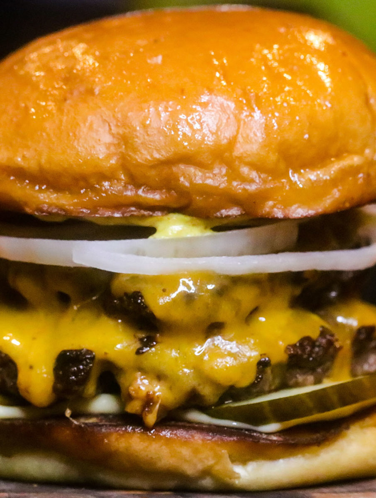

The Best Smash Burger Recipe

Description
I’m gonna show you how to make the best homemade smash burgers. If I were to open a small restaurant or food truck, it would be centered around burgers. I literally love burgers so much, it’s not even remotely funny. Guys…seriously…I have a problem. I love burgers more than anything else. They’re just handfuls of perfection.
Ingredients
The Best Burger Juice
-
1/2 stick butter, melted
-
1 tablespoon worcestershire sauce
-
1/2 tablespoon fish sauce
-
a few dashes liquid smoke
Burgers
- 1 pound ground chuck (80/20)
- kosher salt and black pepper
- cheese
- brioche buns, buttered and toasted
- toppings of choice
Burger Sauce
- 1/4 cup mayo
- 1/4 ketchup
- 1/4 cup spicy brown mustard
- 2 minced garlic cloves
- 1 tablespoon white vinegar
- 1/8 teaspoon cayenne pepper
- 1/8 teaspoon smoked paprika
- salt and pepper
- a pinch of sugar
Instructions
- Mix all ingredients for the burger sauce, and set aside in the fridge. Mix all the Burger Juice ingredients together in a small bowl. In another medium-sized bowl, add the beef. Pour the Burger Juice into the beef, and gently break it up with a spoon or your hands and GENTLY mix thoroughly. Do not over-work your meat, be very very gentle with it. Once it’s thoroughly mixed, scoop into 3-4oz sized balls. Cover the burger balls with plastic wrap and refrigerate for a minimum of a half hour. You want the meat to be super cold. You could also pop into your freezer for about 15 minutes.
- When ready to cook, heat a large cast iron skillet over high heat until SUPER HOT. Drop a tiny sprinkle of water to test it, if it immediately sizzles and bounces around and disappears, it’s ready. No need to add oil, there’s plenty of fat in the burger. Remove your burgers from the fridge or freezer and sprinkle them with kosher salt and pepper. Place about 3 to 4 balls in the skillet, leaving room for them to be smashed down. After 30 seconds of searing, smash them all the way down until they can’t be smashed anymore, with a large heavy skillet. Leave them alone and let them cook for about 3 to 4 minutes, or when the edges start to turn brown. Flip them over and immediately place a slice of cheese on top of each patty. When the cheese melts, they’re ready, about 1 to 2 minutes longer.
- Build your burger with the toppings of your choice and enjoy!